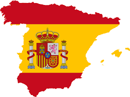

G'day, I’m Grace.
My home is Melbourne, Australia!
My home is Melbourne, Australia!
I am so grateful that English is my first language.
One of my passions is teaching English because I can see how speaking English fluently can provide individuals with many more opportunities in life. I am currently in the process of becoming a Secondary School Teacher and will be teaching English to speakers of other languages in disadvantaged schools.

When people see my asian ethnicity they typically assume that I speak Chinese, unfortunately that's really not the case!
Though my parents are able to speak Mandarin, they tried to speak English at home when they moved to Australia. However, when I reached university I could see the immense value of learning Mandarin so I completed a Diploma of Languages in Mandarin alongside my Bachelor degree.

After doing a semester abroad in Barcelona, I fell in love with the Spanish language.
As the second most spoken langauge in the world I think that it is also another incredible useful language. My dream is to become conversationally fluent and then travel around South America.
